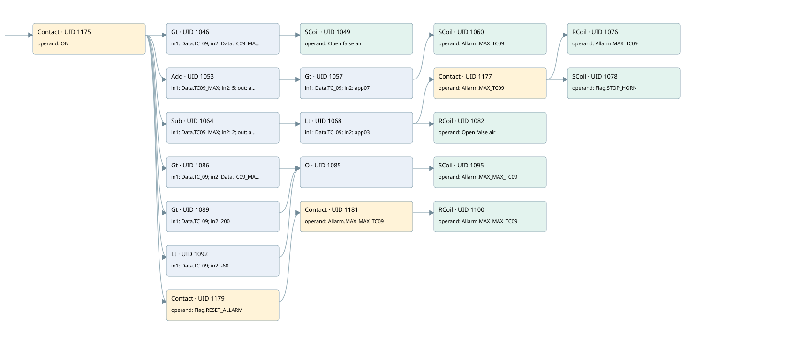

tc-09 filter inlet temperature
allarms 3 · 검색 색인 순서 13 · 원본 내부 NID 추정 13
백업 PLF 원본의 3178700 바이트 위치에서 복원한 XML. 검색 문서 1991의 객체 키 161022007d6b000000000000와 연결했다. 이름 해석 29/29개. 남은 RefId는 상수 또는 미해석 참조다.
연결 구조 다시 그리기
원본 Part/PCon/Wire를 이용한 연결도다. TIA 화면의 래더 배치 또는 실행 결과를 재현한 그림은 아니다. 핀 연결은 아래 표와 원본 XML을 기준으로 읽는다. 노드 위에 마우스를 두면 피연산자 이름을 볼 수 있다.

접점·코일·블록과 피연산자
| Part UID | Gate | Negated 핀 | 연결 피연산자 |
|---|---|---|---|
| 1175 | Contact | operand = ON | |
| 1046 | Gt | in1 = Data.TC_09; in2 = Data.TC09_MAX | |
| 1049 | SCoil | operand = Open false air | |
| 1053 | Add | in1 = Data.TC09_MAX; in2 = 5; out = app07 | |
| 1057 | Gt | in1 = Data.TC_09; in2 = app07 | |
| 1060 | SCoil | operand = Allarm.MAX_TC09 | |
| 1064 | Sub | in1 = Data.TC09_MAX; in2 = 2; out = app03 | |
| 1068 | Lt | in1 = Data.TC_09; in2 = app03 | |
| 1177 | Contact | operand = Allarm.MAX_TC09 | |
| 1076 | RCoil | operand = Allarm.MAX_TC09 | |
| 1078 | SCoil | operand = Flag.STOP_HORN | |
| 1082 | RCoil | operand = Open false air | |
| 1086 | Gt | in1 = Data.TC_09; in2 = Data.TC09_MAX_MAX | |
| 1089 | Gt | in1 = Data.TC_09; in2 = 200 | |
| 1092 | Lt | in1 = Data.TC_09; in2 = -60 | |
| 1085 | O | ||
| 1095 | SCoil | operand = Allarm.MAX_MAX_TC09 | |
| 1179 | Contact | operand = Flag.RESET_ALLARM | |
| 1181 | Contact | operand = Allarm.MAX_MAX_TC09 | |
| 1100 | RCoil | operand = Allarm.MAX_MAX_TC09 |
접점 경로를 펼친 조건식
Contact·O/A·비교기의 원본 연결을 읽기 쉽게 펼친 보조 해석이다. POWER는 전원 레일 시작을 뜻한다. 호출 블록·에지·타이머의 내부 동작과 다중 쓰기 순서는 이 표로 실행 검증하지 않았다. 미해석 핀과 RefId는 원문 연결표에서 확인한다.
| UID | 동작 | 대상 | 원본 접점 경로 | 내용 |
|---|---|---|---|---|
| 1049 | SCoil | Open false air | (ON AND [Data.TC_09 > Data.TC09_MAX]) | 조건 성립 시 Set |
| 1060 | SCoil | Allarm.MAX_TC09 | (Add UID 1053.eno (블록 동작 확인) AND [Data.TC_09 > app07]) | 조건 성립 시 Set |
| 1076 | RCoil | Allarm.MAX_TC09 | ((Sub UID 1064.eno (블록 동작 확인) AND [Data.TC_09 < app03]) AND Allarm.MAX_TC09) | 조건 성립 시 Reset |
| 1078 | SCoil | Flag.STOP_HORN | ((Sub UID 1064.eno (블록 동작 확인) AND [Data.TC_09 < app03]) AND Allarm.MAX_TC09) | 조건 성립 시 Set |
| 1082 | RCoil | Open false air | (Sub UID 1064.eno (블록 동작 확인) AND [Data.TC_09 < app03]) | 조건 성립 시 Reset |
| 1095 | SCoil | Allarm.MAX_MAX_TC09 | ((ON AND [Data.TC_09 > Data.TC09_MAX_MAX]) OR (ON AND [Data.TC_09 > 200]) OR (ON AND [Data.TC_09 < -60])) | 조건 성립 시 Set |
| 1100 | RCoil | Allarm.MAX_MAX_TC09 | ((ON AND Flag.RESET_ALLARM) AND Allarm.MAX_MAX_TC09) | 조건 성립 시 Reset |
원본 배선 연결
| Wire UID | 동일 Wire 연결 끝점 |
|---|---|
| 1183 | Powerrail {} ↔ Part 1175.in |
| 1130 | ORef 1101 (ON) ↔ Part 1175.operand |
| 1176 | Part 1175.out ↔ Part 1046.pre ↔ Part 1053.en ↔ Part 1064.en ↔ Part 1086.pre ↔ Part 1089.pre ↔ Part 1092.pre ↔ Part 1179.in |
| 1131 | ORef 1102 (Data.TC_09) ↔ Part 1046.in1 |
| 1132 | ORef 1103 (Data.TC09_MAX) ↔ Part 1046.in2 |
| 1133 | Part 1046.out ↔ Part 1049.in |
| 1135 | ORef 1104 (Open false air) ↔ Part 1049.operand |
| 1136 | ORef 1105 (Data.TC09_MAX) ↔ Part 1053.in1 |
| 1137 | ORef 1106 (5) ↔ Part 1053.in2 |
| 1139 | Part 1053.eno ↔ Part 1057.pre |
| 1138 | Part 1053.out ↔ ORef 1107 (app07) |
| 1140 | ORef 1108 (Data.TC_09) ↔ Part 1057.in1 |
| 1141 | ORef 1109 (app07) ↔ Part 1057.in2 |
| 1142 | Part 1057.out ↔ Part 1060.in |
| 1144 | ORef 1110 (Allarm.MAX_TC09) ↔ Part 1060.operand |
| 1145 | ORef 1111 (Data.TC09_MAX) ↔ Part 1064.in1 |
| 1146 | ORef 1112 (2) ↔ Part 1064.in2 |
| 1148 | Part 1064.eno ↔ Part 1068.pre |
| 1147 | Part 1064.out ↔ ORef 1113 (app03) |
| 1149 | ORef 1114 (Data.TC_09) ↔ Part 1068.in1 |
| 1150 | ORef 1115 (app03) ↔ Part 1068.in2 |
| 1151 | Part 1068.out ↔ Part 1177.in ↔ Part 1082.in |
| 1152 | ORef 1116 (Allarm.MAX_TC09) ↔ Part 1177.operand |
| 1178 | Part 1177.out ↔ Part 1076.in ↔ Part 1078.in |
| 1153 | ORef 1117 (Allarm.MAX_TC09) ↔ Part 1076.operand |
| 1154 | ORef 1118 (Flag.STOP_HORN) ↔ Part 1078.operand |
| 1156 | ORef 1119 (Open false air) ↔ Part 1082.operand |
| 1158 | ORef 1120 (Data.TC_09) ↔ Part 1086.in1 |
| 1159 | ORef 1121 (Data.TC09_MAX_MAX) ↔ Part 1086.in2 |
| 1160 | Part 1086.out ↔ Part 1085.in1 |
| 1161 | ORef 1122 (Data.TC_09) ↔ Part 1089.in1 |
| 1162 | ORef 1123 (200) ↔ Part 1089.in2 |
| 1163 | Part 1089.out ↔ Part 1085.in2 |
| 1164 | ORef 1124 (Data.TC_09) ↔ Part 1092.in1 |
| 1165 | ORef 1125 (-60) ↔ Part 1092.in2 |
| 1166 | Part 1092.out ↔ Part 1085.in3 |
| 1167 | Part 1085.out ↔ Part 1095.in |
| 1169 | ORef 1126 (Allarm.MAX_MAX_TC09) ↔ Part 1095.operand |
| 1170 | ORef 1127 (Flag.RESET_ALLARM) ↔ Part 1179.operand |
| 1180 | Part 1179.out ↔ Part 1181.in |
| 1171 | ORef 1128 (Allarm.MAX_MAX_TC09) ↔ Part 1181.operand |
| 1182 | Part 1181.out ↔ Part 1100.in |
| 1173 | ORef 1129 (Allarm.MAX_MAX_TC09) ↔ Part 1100.operand |
식별자 해석 근거 29개
| ORef UID | RefId | 이름 | IdentXmlPart 파일 | 해석 방법 |
|---|---|---|---|---|
| 1101 | 1 | ON | 0686-IdentXmlPart.xml | UID/RID + search-text + NID agreement |
| 1102 | 103 | Data.TC_09 | 0684-IdentXmlPart.xml | UID/RID + search-text + NID agreement |
| 1103 | 104 | Data.TC09_MAX | 0684-IdentXmlPart.xml | UID/RID + search-text + NID agreement |
| 1104 | 105 | Open false air | 0686-IdentXmlPart.xml | UID/RID + search-text + NID agreement |
| 1105 | 104 | Data.TC09_MAX | 0684-IdentXmlPart.xml | UID/RID + search-text + NID agreement |
| 1106 | 13 | 5 | 0683-IdentXmlPart.xml | literal candidate: UID/RID/NID + nearby named declarations + search-text agreement |
| 1107 | 107 | app07 | 0685-IdentXmlPart.xml | UID/RID + search-text + NID agreement |
| 1108 | 103 | Data.TC_09 | 0684-IdentXmlPart.xml | UID/RID + search-text + NID agreement |
| 1109 | 107 | app07 | 0685-IdentXmlPart.xml | UID/RID + search-text + NID agreement |
| 1110 | 108 | Allarm.MAX_TC09 | 0684-IdentXmlPart.xml | UID/RID + search-text + NID agreement |
| 1111 | 104 | Data.TC09_MAX | 0684-IdentXmlPart.xml | UID/RID + search-text + NID agreement |
| 1112 | 110 | 2 | 0683-IdentXmlPart.xml | literal candidate: UID/RID/NID + nearby named declarations + search-text agreement |
| 1113 | 111 | app03 | 0685-IdentXmlPart.xml | UID/RID + search-text + NID agreement |
| 1114 | 103 | Data.TC_09 | 0684-IdentXmlPart.xml | UID/RID + search-text + NID agreement |
| 1115 | 111 | app03 | 0685-IdentXmlPart.xml | UID/RID + search-text + NID agreement |
| 1116 | 108 | Allarm.MAX_TC09 | 0684-IdentXmlPart.xml | UID/RID + search-text + NID agreement |
| 1117 | 108 | Allarm.MAX_TC09 | 0684-IdentXmlPart.xml | UID/RID + search-text + NID agreement |
| 1118 | 16 | Flag.STOP_HORN | 0684-IdentXmlPart.xml | UID/RID + search-text + NID agreement |
| 1119 | 105 | Open false air | 0686-IdentXmlPart.xml | UID/RID + search-text + NID agreement |
| 1120 | 103 | Data.TC_09 | 0684-IdentXmlPart.xml | UID/RID + search-text + NID agreement |
| 1121 | 112 | Data.TC09_MAX_MAX | 0684-IdentXmlPart.xml | UID/RID + search-text + NID agreement |
| 1122 | 103 | Data.TC_09 | 0684-IdentXmlPart.xml | UID/RID + search-text + NID agreement |
| 1123 | 54 | 200 | 0683-IdentXmlPart.xml | literal candidate: UID/RID/NID + nearby named declarations + search-text agreement |
| 1124 | 103 | Data.TC_09 | 0684-IdentXmlPart.xml | UID/RID + search-text + NID agreement |
| 1125 | 21 | -60 | 0683-IdentXmlPart.xml | literal candidate: UID/RID/NID + nearby named declarations + search-text agreement |
| 1126 | 113 | Allarm.MAX_MAX_TC09 | 0684-IdentXmlPart.xml | UID/RID + search-text + NID agreement |
| 1127 | 24 | Flag.RESET_ALLARM | 0684-IdentXmlPart.xml | UID/RID + search-text + NID agreement |
| 1128 | 113 | Allarm.MAX_MAX_TC09 | 0684-IdentXmlPart.xml | UID/RID + search-text + NID agreement |
| 1129 | 113 | Allarm.MAX_MAX_TC09 | 0684-IdentXmlPart.xml | UID/RID + search-text + NID agreement |
검색 코드 보조 자료
참조 명칭을 찾기 위한 자료이며 실행 순서나 AND/OR 관계는 위 연결표로 확인한다.
"on" "data".tc_09 "data".tc09_max "open false air" add "data".tc09_max 5 "data".tc_09 #app07 "allarm".max_tc09 #app07 sub "data".tc09_max 2 "data".tc_09 #app03 "allarm".max_tc09 "allarm".max_tc09 #app03 "open false air" "flag".stop_horn "data".tc_09 "data".tc09_max_max "allarm".max_max_tc09 "data".tc_09 200 "data".tc_09 -60 "flag".reset_allarm "allarm".max_max_tc09 "allarm".max_max_tc09